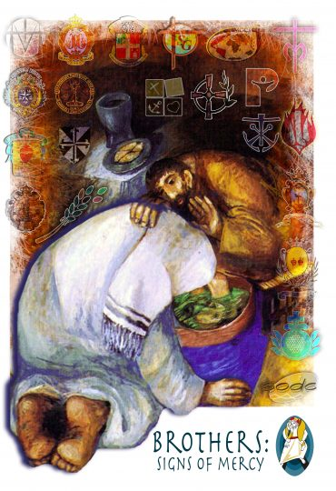

Aspirancy
The First Step on the Marist Journey
Aspirancy is the initial phase of Marist formation where young men who feel drawn to religious life begin to explore and discern their vocation in a structured, supportive environment. It is a period of encounter — with God, with the Marist community, and with oneself.
During this time, aspirants live and study in a Marist community, participating in prayer, communal life, ministry, and spiritual direction. They are accompanied by experienced brothers who help them understand the Marist charism and test their readiness for the next steps of formation.

Life at the Aspirancy House
What Aspirants Experience
Every day in the Aspirancy is an invitation — to grow deeper, to serve more generously, and to discover the beauty of a life given for God and the young.
Spiritual Formation
Rooted in the rhythm of daily prayer, Holy Mass, Lectio Divina, and personal spiritual direction, aspirants are led into a living, transformative relationship with God. Each morning begins with stillness, and each evening closes with gratitude — cultivating the interior life that sustains a Marist vocation for a lifetime.
Community Life
The Aspirancy house is more than a residence — it is a school of love. Living alongside fellow aspirants and seasoned Brothers, young men learn the art of deep listening, joyful sacrifice, and authentic brotherhood. Shared meals, house duties, recreation, and honest conversation forge bonds that mirror the family spirit at the heart of Champagnat's vision.
Apostolic Experience
Theory finds its fire in action. Aspirants are immersed in Marist schools, youth programs, and community outreach — standing beside Brothers as they teach, accompany, and uplift the young. These apostolic encounters do not merely train future educators; they ignite a passion for mission that no classroom alone can awaken.
Current Formation Year
Meet Our Aspirants
Young men answering the call — walking their first steps with Champagnat's spirit of faith, presence, and service.
 Aspirant
Aspirant
[Aspirant Full Name]
A young man from [hometown] with a deep love for the youth and a growing call to serve as a Marist Brother. He finds joy in community life and daily prayer.
Previous School
[Previous School Name]
Current School
[Current School Name]
Year Level
[Year Level]
Course
[Course]
Aspirant
[Aspirant Full Name]
Coming from a family of deep faith, he is drawn to the Marist mission of education and presence among young people, especially those most in need.
Previous School
[Previous School Name]
Current School
[Current School Name]
Year Level
[Year Level]
Course
[Course]
Aspirant
[Aspirant Full Name]
He joined the Aspirancy after feeling a persistent nudge from God during his senior high school years. He sees teaching as a form of love and discipleship.
Previous School
[Previous School Name]
Current School
[Current School Name]
Year Level
[Year Level]
Course
[Course]
From the Heart
Voices and Reflections
In their own words — aspirants share what this journey of faith and discernment means to them.
"Being an aspirant opened my eyes to what it really means to be present — not just physically, but with your whole heart. Every small act of service feels like a response to God's call."
[Aspirant Full Name]
[Course] · [Year Level]
"I did not expect that community life would change me this much. Living with the Brothers and fellow aspirants taught me how to listen, how to forgive, and how to truly love without conditions."
[Aspirant Full Name]
[Course] · [Year Level]
"The Aspirancy is not just a program — it is an encounter with God. Every retreat, every ministry experience, every conversation with a Brother has deepened my desire to give my life for the mission."
[Aspirant Full Name]
[Course] · [Year Level]
Joining the Marist Journey
Is This Path for You?
You don't have to be perfect — you just have to be willing. If your heart is restless and you sense a call to something more, the Marist Aspirancy may be exactly where God is leading you.
Who Can Apply?
We welcome young men who carry a genuine hunger for God and a heart inclined toward service. No prior formation experience is necessary — only sincerity, openness, and readiness to discern.
- Male, Catholic individuals aged 16–25In the prime years of discernment and youthful generosity.
- Completion of at least secondary educationA foundation of study that will deepen throughout formation.
- Endorsement from a parish priest or spiritual directorA trusted witness to your character and active faith life.
- Good physical and mental healthThe wholeness needed to sustain an active, community-based life.
- An open heart and genuine desire to serve God's peopleThe one requirement that matters most — a willing and available soul.
How to Apply
Taking the first step is simpler than you think. Reach out to our Vocation Office to request an application form, and we will walk you through the rest.
An initial interview and home visit are part of the process — an opportunity for us to get to know you and for you to get to know us.
Life in Motion
Aspirancy in Pictures
Glimpses of a life that is ordinary in its routine yet extraordinary in its meaning — caught in moments of prayer, laughter, service, and growth.


Formation & Vocation · April 2025
"I Didn't Know I Was Looking — Until I Found It Here"
For many young men, the Aspirancy begins not with a dramatic moment of clarity, but with a quiet restlessness — a persistent sense that ordinary life was not quite enough. Three of our current aspirants share what brought them here, what surprised them, and what keeps them staying.
It begins with a question and ends, perhaps, with a commitment — but the journey between is filled with friendship, silence, laughter, and the slow discovery that one's deepest desires and the world's greatest needs are not as far apart as they once seemed.
The Road Ahead
Other Formation Stages
The Aspirancy is only the beginning. Each stage of formation deepens the call, refines the person, and draws the young man ever closer to a life fully consecrated to God and the young.
Novitiate
The Novitiate marks a decisive threshold — the formal entry into Marist religious life. For two years, novices immerse themselves in prayer, study of the Rule, and guided apostolic experience under the close accompaniment of a Novice Master. It culminates in the profession of first vows of poverty, chastity, and obedience.
Scholasticate
Following the Novitiate, scholastics enter a rich period of integrated formation combining rigorous academic study — typically in education, theology, or philosophy — with active apostolic engagement. It is the season of becoming: learning not only what to teach, but how to be a Marist Brother in the fullest sense.
Formation Team
Behind every aspirant, novice, and scholastic stands a dedicated team of Marist Brothers — men of wisdom, prayer, and pastoral sensitivity who walk the journey alongside those they form. They are not just guides; they are witnesses, companions, and embodiments of the Marist life they are called to transmit.